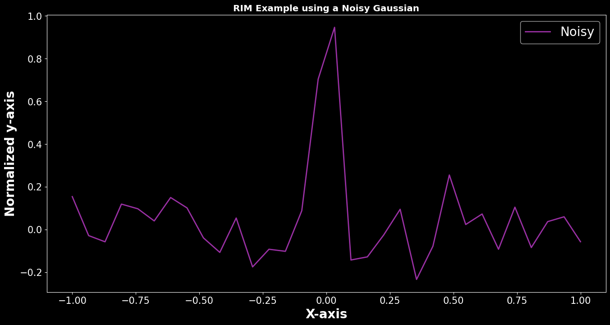
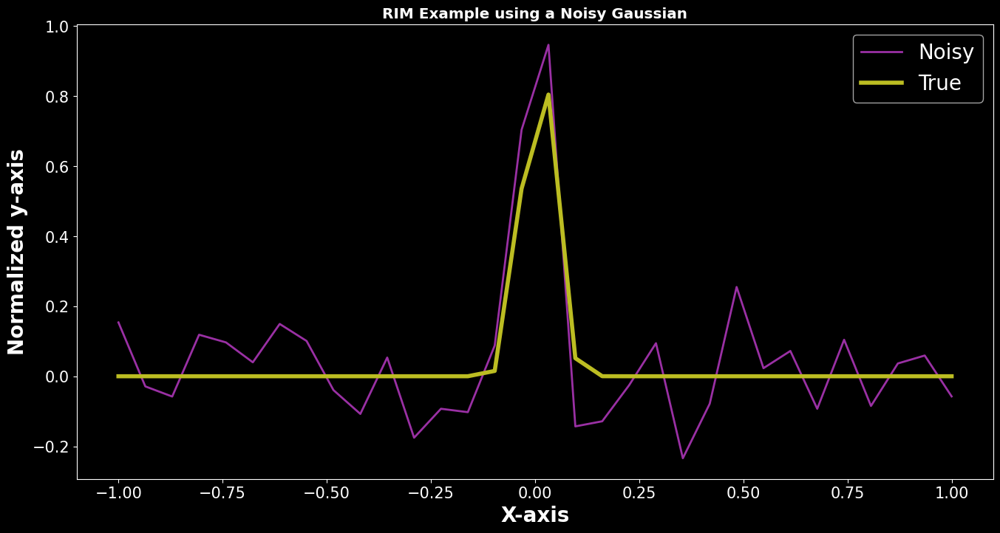
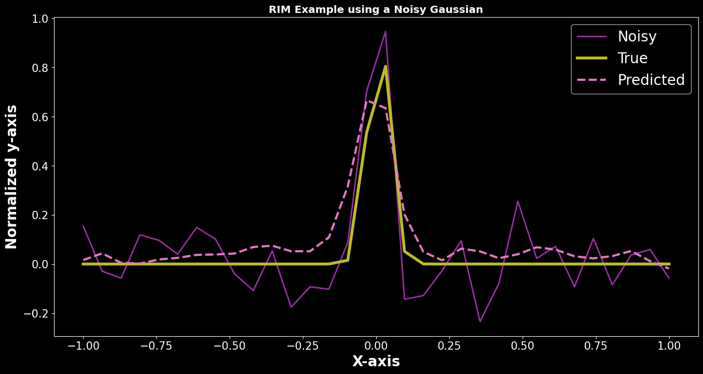

1D Gaussian¶
In this notebook, I will develop the framework to use a recurrent inference machine to solve a basic 1D deconvolution problem.
The problem: Given a 1D Gaussian profile convolved with Poisson noise, can we use and RIM to recover the original 1D Gaussian profile.
[1]:
import numpy as np
import matplotlib.pyplot as plt
import tensorflow as tf
from tensorflow import keras
from tensorflow.keras import layers
import time
import sys
sys.path.append("/home/carterrhea/Documents/astroRIM/") # Full path to AstroRIM module
from RIM_sequence import RIM
from RIM_model import RIM_Model_1D # Import name of architecture to use
from RIM_physical import calc_grad_standard # Import name of gradient log likelihood
plt.style.use('dark.mplstyle')
2022-11-14 17:10:40.802329: I tensorflow/core/platform/cpu_feature_guard.cc:193] This TensorFlow binary is optimized with oneAPI Deep Neural Network Library (oneDNN) to use the following CPU instructions in performance-critical operations: SSE4.1 SSE4.2 AVX AVX2 AVX512F AVX512_VNNI FMA
To enable them in other operations, rebuild TensorFlow with the appropriate compiler flags.
2022-11-14 17:10:41.867362: I tensorflow/core/platform/cpu_feature_guard.cc:193] This TensorFlow binary is optimized with oneAPI Deep Neural Network Library (oneDNN) to use the following CPU instructions in performance-critical operations: SSE4.1 SSE4.2 AVX AVX2 AVX512F AVX512_VNNI FMA
To enable them in other operations, rebuild TensorFlow with the appropriate compiler flags.
2022-11-14 17:10:41.868620: I tensorflow/core/common_runtime/process_util.cc:146] Creating new thread pool with default inter op setting: 2. Tune using inter_op_parallelism_threads for best performance.
[2]:
n = 32 # Size of spectrum
N = 2000 # Number of spectra
Create Convolved Image¶
[3]:
def gaussian(x, mu, sig):
return 1*np.exp(-np.power(x - mu, 2.) / (2 * np.power(sig, 2.)))
def conv_mat(n):
"""
Create convolution matrix that is an identity matrix with noise
"""
conv_mat = np.eye(n)+np.random.normal(0, 0.05, (n,n))
return conv_mat
def create_convolved(N):
'''
Create convolved Gaussian that are 28x28
Args:
n - number of Gausians
Return:
gaussians - List of convolved Gaussians
'''
a = 0.01 # Powerlaw slope
gaussians_initial = [] # List of initial Gaussians
powerlaw_conv = [] # List of Powerlaws used in convolution
gaussians_final = [] # List of final Gaussians after convolution
noise = [] # List of noises added
for i in range(N):
# Create original 1D Gaussian
x = np.linspace(-1,1,n)
gaus_orig = gaussian(x, np.random.uniform(0.001,.01), np.random.uniform(0.001,0.1))
gaussians_initial.append(gaus_orig)
# Convolve with additional Gaussian
conv_mat_ = conv_mat(n)
gaus_conv = conv_mat_@gaus_orig
# Add noise
noise_ = np.random.normal(0,0.1, n)
gaus_noise = gaus_conv + noise_
gaussians_final.append(gaus_noise)
powerlaw_conv.append(conv_mat_)
noise.append(noise_)
return gaussians_initial,gaussians_final,powerlaw_conv,noise
# Create N instances
gaussians_initial, gaussians_final,powerlaw_conv,noise = create_convolved(N)
[4]:
for i in range(5):
plt.plot(np.linspace(-1,1,n),gaussians_final[i], label='Convolved Gaussian %i'%i)
plt.legend()
[4]:
<matplotlib.legend.Legend at 0x7fb26cf3a580>

Recurrent Inference Machine¶
[5]:
# Create training, validation, and test sets
train_percentage = 0.7
valid_percentage = 0.9
test_percentage = 1.0
len_X = len(gaussians_initial)
# Training
X_train = gaussians_initial[:int(train_percentage*len_X)]
Y_train = gaussians_final[:int(train_percentage*len_X)]
A_train = powerlaw_conv[:int(train_percentage*len_X)]
N_train = noise[:int(train_percentage*len_X)]
#Validation
X_valid = gaussians_initial[int(train_percentage*len_X):int(valid_percentage*len_X)]
Y_valid = gaussians_final[int(train_percentage*len_X):int(valid_percentage*len_X)]
A_valid = powerlaw_conv[int(train_percentage*len_X):int(valid_percentage*len_X)]
N_valid = noise[int(train_percentage*len_X):int(valid_percentage*len_X)]
#Test
X_test = gaussians_initial[int(valid_percentage*len_X):]
Y_test = gaussians_final[int(valid_percentage*len_X):]
A_test = powerlaw_conv[int(valid_percentage*len_X):]
N_test = noise[int(valid_percentage*len_X):]
[6]:
# Initiate RIM architecture to use. We are using the standard RIM archtecture defined in `rim_model.py` as `RIM_Model_1D`.
rim_architecture = RIM_Model_1D(conv_filters=8, kernel_size=3, rnn_units=[128, 128])
# Load model and define hyper parameters
epochs = 10 # Number of epochs
batch_size = 8 # Batch size
learning_rate = 1e-2 # Initial learning rate
time_steps = 10 # Time steps
dimensions = 1 # Dimensions of the problem
learning_rate_function = 'step' # Type of learning rate function (options are: step, exponential, or linear)
model = RIM(rim_model=rim_architecture, gradient=calc_grad_standard, input_size=n, dimensions=dimensions, t_steps=time_steps,
learning_rate=learning_rate, learning_rate_function=learning_rate_function)
# Prepare the training dataset
train_dataset = tf.data.Dataset.from_tensor_slices((X_train, Y_train, A_train, N_train))
train_dataset = train_dataset.batch(batch_size, drop_remainder=True)
train_dataset = train_dataset.prefetch(2)
# Prepare the validation dataset
val_dataset = tf.data.Dataset.from_tensor_slices((X_valid, Y_valid, A_valid, N_valid))
val_dataset = val_dataset.batch(batch_size, drop_remainder=True)
val_dataset = val_dataset.prefetch(2)
[7]:
# Fit model
ysol_valid, training_loss, valid_loss, learning_rates = model.fit(batch_size, epochs, train_dataset, val_dataset)
Training epoch: 1:: Completion: 0.00% ETA 01:16:36 loss: 1.143E+00 MSE: 1.369E+00
Training epoch: 1:: Completion: 5.71% ETA 00:01:46 loss: 2.207E-01 MSE: 1.594E+00
Training epoch: 1:: Completion: 11.43% ETA 00:01:58 loss: 9.440E-02 MSE: 9.027E-01
Training epoch: 1:: Completion: 17.14% ETA 00:01:19 loss: 7.642E-02 MSE: 6.422E-01
Training epoch: 1:: Completion: 22.86% ETA 00:01:31 loss: 8.694E-02 MSE: 5.032E-01
Training epoch: 1:: Completion: 28.57% ETA 00:01:25 loss: 8.131E-02 MSE: 4.163E-01
Training epoch: 1:: Completion: 34.29% ETA 00:01:12 loss: 4.782E-02 MSE: 3.575E-01
Training epoch: 1:: Completion: 40.00% ETA 00:01:09 loss: 6.343E-02 MSE: 3.153E-01
Training epoch: 1:: Completion: 45.71% ETA 00:00:59 loss: 6.860E-02 MSE: 2.848E-01
Training epoch: 1:: Completion: 51.43% ETA 00:00:55 loss: 4.815E-02 MSE: 2.594E-01
Training epoch: 1:: Completion: 57.14% ETA 00:00:51 loss: 5.909E-02 MSE: 2.390E-01
Training epoch: 1:: Completion: 62.86% ETA 00:00:46 loss: 5.784E-02 MSE: 2.224E-01
Training epoch: 1:: Completion: 68.57% ETA 00:00:37 loss: 4.555E-02 MSE: 2.084E-01
Training epoch: 1:: Completion: 74.29% ETA 00:00:29 loss: 5.198E-02 MSE: 1.967E-01
Training epoch: 1:: Completion: 80.00% ETA 00:00:19 loss: 3.222E-02 MSE: 1.862E-01
Training epoch: 1:: Completion: 85.71% ETA 00:00:16 loss: 6.537E-02 MSE: 1.776E-01
Training epoch: 1:: Completion: 91.43% ETA 00:00:10 loss: 4.992E-02 MSE: 1.696E-01
Training epoch: 1:: Completion: 97.14% ETA 00:00:02 loss: 4.628E-02 MSE: 1.624E-01
Validation epoch: 1:: Completion: 0.00% ETA: 00:17:48 train_loss: 6.575E-02 train_MSE: 1.600E-01 val_loss: 4.617E-02 val_MSE: 4.617E-02
Validation epoch: 1:: Completion: 5.71% ETA: 00:00:31 train_loss: 6.575E-02 train_MSE: 1.600E-01 val_loss: 5.256E-02 val_MSE: 5.073E-02
Validation epoch: 1:: Completion: 11.43% ETA: 00:00:27 train_loss: 6.575E-02 train_MSE: 1.600E-01 val_loss: 4.526E-02 val_MSE: 4.823E-02
Validation epoch: 1:: Completion: 17.14% ETA: 00:00:20 train_loss: 6.575E-02 train_MSE: 1.600E-01 val_loss: 4.291E-02 val_MSE: 4.886E-02
Validation epoch: 1:: Completion: 22.86% ETA: 00:00:19 train_loss: 6.575E-02 train_MSE: 1.600E-01 val_loss: 5.835E-02 val_MSE: 4.941E-02
Validation epoch: 1:: Completion: 100.00% ETA: 0 train_loss: 6.575E-02 train_MSE: 1.600E-01 val_loss: 4.525E-02 val_MSE: 4.937E-02
Training MSE: 0.1600
Validation MSE: 0.0494
Time taken on epoch: 00:02:39 seconds
Training epoch: 2:: Completion: 0.00% ETA 00:03:17 loss: 5.270E-02 MSE: 4.993E-02
Training epoch: 2:: Completion: 5.71% ETA 00:01:28 loss: 4.484E-02 MSE: 4.869E-02
Training epoch: 2:: Completion: 11.43% ETA 00:01:43 loss: 5.216E-02 MSE: 4.828E-02
Training epoch: 2:: Completion: 17.14% ETA 00:01:45 loss: 5.322E-02 MSE: 4.806E-02
Training epoch: 2:: Completion: 22.86% ETA 00:01:18 loss: 6.237E-02 MSE: 4.774E-02
Training epoch: 2:: Completion: 28.57% ETA 00:01:42 loss: 5.015E-02 MSE: 4.698E-02
Training epoch: 2:: Completion: 34.29% ETA 00:01:20 loss: 3.744E-02 MSE: 4.611E-02
Training epoch: 2:: Completion: 40.00% ETA 00:01:12 loss: 4.773E-02 MSE: 4.589E-02
Training epoch: 2:: Completion: 45.71% ETA 00:01:13 loss: 5.912E-02 MSE: 4.654E-02
Training epoch: 2:: Completion: 51.43% ETA 00:01:06 loss: 3.848E-02 MSE: 4.601E-02
Training epoch: 2:: Completion: 57.14% ETA 00:00:57 loss: 4.459E-02 MSE: 4.570E-02
Training epoch: 2:: Completion: 62.86% ETA 00:00:44 loss: 4.611E-02 MSE: 4.569E-02
Training epoch: 2:: Completion: 68.57% ETA 00:00:33 loss: 4.014E-02 MSE: 4.555E-02
Training epoch: 2:: Completion: 74.29% ETA 00:00:29 loss: 4.532E-02 MSE: 4.576E-02
Training epoch: 2:: Completion: 80.00% ETA 00:00:22 loss: 2.746E-02 MSE: 4.543E-02
Training epoch: 2:: Completion: 85.71% ETA 00:00:14 loss: 5.318E-02 MSE: 4.558E-02
Training epoch: 2:: Completion: 91.43% ETA 00:00:08 loss: 4.100E-02 MSE: 4.545E-02
Training epoch: 2:: Completion: 97.14% ETA 00:00:02 loss: 3.827E-02 MSE: 4.517E-02
Validation epoch: 2:: Completion: 0.00% ETA: 00:00:34 train_loss: 5.774E-02 train_MSE: 4.522E-02 val_loss: 4.294E-02 val_MSE: 4.294E-02
Validation epoch: 2:: Completion: 5.71% ETA: 00:00:16 train_loss: 5.774E-02 train_MSE: 4.522E-02 val_loss: 4.839E-02 val_MSE: 4.481E-02
Validation epoch: 2:: Completion: 11.43% ETA: 00:00:45 train_loss: 5.774E-02 train_MSE: 4.522E-02 val_loss: 4.022E-02 val_MSE: 4.273E-02
Validation epoch: 2:: Completion: 17.14% ETA: 00:00:24 train_loss: 5.774E-02 train_MSE: 4.522E-02 val_loss: 3.865E-02 val_MSE: 4.309E-02
Validation epoch: 2:: Completion: 22.86% ETA: 00:00:22 train_loss: 5.774E-02 train_MSE: 4.522E-02 val_loss: 4.931E-02 val_MSE: 4.348E-02
Validation epoch: 2:: Completion: 100.00% ETA: 0 train_loss: 5.774E-02 train_MSE: 4.522E-02 val_loss: 3.956E-02 val_MSE: 4.351E-02
Training MSE: 0.0452
Validation MSE: 0.0435
Time taken on epoch: 00:02:11 seconds
Training epoch: 3:: Completion: 0.00% ETA 00:02:58 loss: 4.639E-02 MSE: 4.680E-02
Training epoch: 3:: Completion: 5.71% ETA 00:01:31 loss: 3.765E-02 MSE: 4.395E-02
Training epoch: 3:: Completion: 11.43% ETA 00:01:53 loss: 4.706E-02 MSE: 4.291E-02
Training epoch: 3:: Completion: 17.14% ETA 00:01:42 loss: 4.487E-02 MSE: 4.240E-02
Training epoch: 3:: Completion: 22.86% ETA 00:01:23 loss: 5.622E-02 MSE: 4.237E-02
Training epoch: 3:: Completion: 28.57% ETA 00:01:54 loss: 4.048E-02 MSE: 4.176E-02
Training epoch: 3:: Completion: 34.29% ETA 00:01:35 loss: 3.439E-02 MSE: 4.135E-02
Training epoch: 3:: Completion: 40.00% ETA 00:01:39 loss: 4.349E-02 MSE: 4.149E-02
Training epoch: 3:: Completion: 45.71% ETA 00:01:07 loss: 5.423E-02 MSE: 4.194E-02
Training epoch: 3:: Completion: 51.43% ETA 00:01:13 loss: 3.324E-02 MSE: 4.154E-02
Training epoch: 3:: Completion: 57.14% ETA 00:00:54 loss: 4.042E-02 MSE: 4.128E-02
Training epoch: 3:: Completion: 62.86% ETA 00:00:53 loss: 4.076E-02 MSE: 4.126E-02
Training epoch: 3:: Completion: 68.57% ETA 00:00:38 loss: 3.539E-02 MSE: 4.121E-02
Training epoch: 3:: Completion: 74.29% ETA 00:00:38 loss: 4.137E-02 MSE: 4.148E-02
Training epoch: 3:: Completion: 80.00% ETA 00:00:24 loss: 2.446E-02 MSE: 4.122E-02
Training epoch: 3:: Completion: 85.71% ETA 00:00:18 loss: 4.578E-02 MSE: 4.145E-02
Training epoch: 3:: Completion: 91.43% ETA 00:00:13 loss: 3.700E-02 MSE: 4.135E-02
Training epoch: 3:: Completion: 97.14% ETA 00:00:03 loss: 3.464E-02 MSE: 4.116E-02
Validation epoch: 3:: Completion: 0.00% ETA: 00:00:47 train_loss: 5.103E-02 train_MSE: 4.123E-02 val_loss: 4.586E-02 val_MSE: 4.586E-02
Validation epoch: 3:: Completion: 5.71% ETA: 00:00:36 train_loss: 5.103E-02 train_MSE: 4.123E-02 val_loss: 4.667E-02 val_MSE: 4.248E-02
Validation epoch: 3:: Completion: 11.43% ETA: 00:00:26 train_loss: 5.103E-02 train_MSE: 4.123E-02 val_loss: 3.774E-02 val_MSE: 4.078E-02
Validation epoch: 3:: Completion: 17.14% ETA: 00:00:35 train_loss: 5.103E-02 train_MSE: 4.123E-02 val_loss: 3.684E-02 val_MSE: 4.091E-02
Validation epoch: 3:: Completion: 22.86% ETA: 00:00:40 train_loss: 5.103E-02 train_MSE: 4.123E-02 val_loss: 4.620E-02 val_MSE: 4.142E-02
Validation epoch: 3:: Completion: 100.00% ETA: 0 train_loss: 5.103E-02 train_MSE: 4.123E-02 val_loss: 3.624E-02 val_MSE: 4.133E-02
Training MSE: 0.0412
Validation MSE: 0.0413
Time taken on epoch: 00:02:39 seconds
Training epoch: 4:: Completion: 0.00% ETA 00:02:40 loss: 4.034E-02 MSE: 4.187E-02
Training epoch: 4:: Completion: 5.71% ETA 00:01:50 loss: 3.709E-02 MSE: 4.069E-02
Training epoch: 4:: Completion: 11.43% ETA 00:01:36 loss: 4.239E-02 MSE: 3.902E-02
Training epoch: 4:: Completion: 17.14% ETA 00:02:11 loss: 3.516E-02 MSE: 3.816E-02
Training epoch: 4:: Completion: 22.86% ETA 00:01:52 loss: 4.672E-02 MSE: 3.794E-02
Training epoch: 4:: Completion: 28.57% ETA 00:01:47 loss: 3.363E-02 MSE: 3.713E-02
Training epoch: 4:: Completion: 34.29% ETA 00:01:26 loss: 2.913E-02 MSE: 3.680E-02
Training epoch: 4:: Completion: 40.00% ETA 00:01:15 loss: 3.477E-02 MSE: 3.680E-02
Training epoch: 4:: Completion: 45.71% ETA 00:01:05 loss: 4.036E-02 MSE: 3.692E-02
Training epoch: 4:: Completion: 51.43% ETA 00:00:54 loss: 2.970E-02 MSE: 3.639E-02
Training epoch: 4:: Completion: 57.14% ETA 00:00:47 loss: 3.511E-02 MSE: 3.595E-02
Training epoch: 4:: Completion: 62.86% ETA 00:00:55 loss: 3.124E-02 MSE: 3.576E-02
Training epoch: 4:: Completion: 68.57% ETA 00:00:53 loss: 3.059E-02 MSE: 3.564E-02
Training epoch: 4:: Completion: 74.29% ETA 00:00:29 loss: 3.194E-02 MSE: 3.567E-02
Training epoch: 4:: Completion: 80.00% ETA 00:00:25 loss: 2.185E-02 MSE: 3.539E-02
Training epoch: 4:: Completion: 85.71% ETA 00:00:21 loss: 3.072E-02 MSE: 3.524E-02
Training epoch: 4:: Completion: 91.43% ETA 00:00:11 loss: 2.889E-02 MSE: 3.524E-02
Training epoch: 4:: Completion: 97.14% ETA 00:00:03 loss: 2.712E-02 MSE: 3.502E-02
Validation epoch: 4:: Completion: 0.00% ETA: 00:00:31 train_loss: 3.703E-02 train_MSE: 3.499E-02 val_loss: 3.097E-02 val_MSE: 3.097E-02
Validation epoch: 4:: Completion: 5.71% ETA: 00:00:52 train_loss: 3.703E-02 train_MSE: 3.499E-02 val_loss: 2.636E-02 val_MSE: 2.651E-02
Validation epoch: 4:: Completion: 11.43% ETA: 00:00:31 train_loss: 3.703E-02 train_MSE: 3.499E-02 val_loss: 2.529E-02 val_MSE: 2.671E-02
Validation epoch: 4:: Completion: 17.14% ETA: 00:00:32 train_loss: 3.703E-02 train_MSE: 3.499E-02 val_loss: 2.594E-02 val_MSE: 2.622E-02
Validation epoch: 4:: Completion: 22.86% ETA: 00:00:58 train_loss: 3.703E-02 train_MSE: 3.499E-02 val_loss: 2.573E-02 val_MSE: 2.665E-02
Validation epoch: 4:: Completion: 100.00% ETA: 0 train_loss: 3.703E-02 train_MSE: 3.499E-02 val_loss: 2.656E-02 val_MSE: 2.683E-02
Training MSE: 0.0350
Validation MSE: 0.0268
Time taken on epoch: 00:02:32 seconds
Training epoch: 5:: Completion: 0.00% ETA 00:02:46 loss: 3.275E-02 MSE: 3.068E-02
Training epoch: 5:: Completion: 5.71% ETA 00:02:31 loss: 3.101E-02 MSE: 3.597E-02
Training epoch: 5:: Completion: 11.43% ETA 00:01:59 loss: 3.001E-02 MSE: 3.343E-02
Training epoch: 5:: Completion: 17.14% ETA 00:01:46 loss: 3.011E-02 MSE: 3.091E-02
Training epoch: 5:: Completion: 22.86% ETA 00:01:24 loss: 3.040E-02 MSE: 2.912E-02
Training epoch: 5:: Completion: 28.57% ETA 00:01:37 loss: 2.686E-02 MSE: 2.993E-02
Training epoch: 5:: Completion: 34.29% ETA 00:01:20 loss: 2.224E-02 MSE: 3.046E-02
Training epoch: 5:: Completion: 40.00% ETA 00:01:15 loss: 2.403E-02 MSE: 2.981E-02
Training epoch: 5:: Completion: 45.71% ETA 00:01:00 loss: 2.348E-02 MSE: 2.958E-02
Training epoch: 5:: Completion: 51.43% ETA 00:01:07 loss: 1.973E-02 MSE: 2.898E-02
Training epoch: 5:: Completion: 57.14% ETA 00:00:43 loss: 2.365E-02 MSE: 2.824E-02
Training epoch: 5:: Completion: 62.86% ETA 00:00:45 loss: 2.184E-02 MSE: 2.791E-02
Training epoch: 5:: Completion: 68.57% ETA 00:00:42 loss: 2.770E-02 MSE: 2.779E-02
Training epoch: 5:: Completion: 74.29% ETA 00:00:27 loss: 1.683E-02 MSE: 2.719E-02
Training epoch: 5:: Completion: 80.00% ETA 00:00:30 loss: 1.375E-02 MSE: 2.654E-02
Training epoch: 5:: Completion: 85.71% ETA 00:00:18 loss: 1.501E-02 MSE: 2.620E-02
Training epoch: 5:: Completion: 91.43% ETA 00:00:11 loss: 1.786E-02 MSE: 2.582E-02
Training epoch: 5:: Completion: 97.14% ETA 00:00:04 loss: 1.375E-02 MSE: 2.539E-02
Validation epoch: 5:: Completion: 0.00% ETA: 00:00:35 train_loss: 2.495E-02 train_MSE: 2.533E-02 val_loss: 1.896E-02 val_MSE: 1.896E-02
Validation epoch: 5:: Completion: 5.71% ETA: 00:00:35 train_loss: 2.495E-02 train_MSE: 2.533E-02 val_loss: 2.006E-02 val_MSE: 1.819E-02
Validation epoch: 5:: Completion: 11.43% ETA: 00:00:27 train_loss: 2.495E-02 train_MSE: 2.533E-02 val_loss: 1.935E-02 val_MSE: 1.841E-02
Validation epoch: 5:: Completion: 17.14% ETA: 00:00:26 train_loss: 2.495E-02 train_MSE: 2.533E-02 val_loss: 2.087E-02 val_MSE: 1.828E-02
Validation epoch: 5:: Completion: 22.86% ETA: 00:00:41 train_loss: 2.495E-02 train_MSE: 2.533E-02 val_loss: 1.916E-02 val_MSE: 1.860E-02
Validation epoch: 5:: Completion: 100.00% ETA: 0 train_loss: 2.495E-02 train_MSE: 2.533E-02 val_loss: 1.678E-02 val_MSE: 1.872E-02
Training MSE: 0.0253
Validation MSE: 0.0187
Time taken on epoch: 00:02:30 seconds
Training epoch: 6:: Completion: 0.00% ETA 00:03:16 loss: 2.016E-02 MSE: 2.092E-02
Training epoch: 6:: Completion: 5.71% ETA 00:01:31 loss: 2.452E-02 MSE: 2.168E-02
Training epoch: 6:: Completion: 11.43% ETA 00:01:55 loss: 1.525E-02 MSE: 2.046E-02
Training epoch: 6:: Completion: 17.14% ETA 00:01:46 loss: 1.909E-02 MSE: 1.856E-02
Training epoch: 6:: Completion: 22.86% ETA 00:01:46 loss: 1.816E-02 MSE: 1.817E-02
Training epoch: 6:: Completion: 28.57% ETA 00:01:32 loss: 1.827E-02 MSE: 1.825E-02
Training epoch: 6:: Completion: 34.29% ETA 00:01:21 loss: 1.360E-02 MSE: 1.802E-02
Training epoch: 6:: Completion: 40.00% ETA 00:01:17 loss: 1.311E-02 MSE: 1.769E-02
Training epoch: 6:: Completion: 45.71% ETA 00:01:21 loss: 1.647E-02 MSE: 1.758E-02
Training epoch: 6:: Completion: 51.43% ETA 00:00:58 loss: 1.622E-02 MSE: 1.753E-02
Training epoch: 6:: Completion: 57.14% ETA 00:01:03 loss: 1.859E-02 MSE: 1.730E-02
Training epoch: 6:: Completion: 62.86% ETA 00:00:42 loss: 1.533E-02 MSE: 1.699E-02
Training epoch: 6:: Completion: 68.57% ETA 00:00:41 loss: 1.934E-02 MSE: 1.665E-02
Training epoch: 6:: Completion: 74.29% ETA 00:00:31 loss: 1.477E-02 MSE: 1.649E-02
Training epoch: 6:: Completion: 80.00% ETA 00:00:30 loss: 1.325E-02 MSE: 1.636E-02
Training epoch: 6:: Completion: 85.71% ETA 00:00:17 loss: 1.472E-02 MSE: 1.642E-02
Training epoch: 6:: Completion: 91.43% ETA 00:00:10 loss: 1.694E-02 MSE: 1.640E-02
Training epoch: 6:: Completion: 97.14% ETA 00:00:04 loss: 1.312E-02 MSE: 1.633E-02
Validation epoch: 6:: Completion: 0.00% ETA: 00:00:47 train_loss: 1.932E-02 train_MSE: 1.636E-02 val_loss: 1.567E-02 val_MSE: 1.567E-02
Validation epoch: 6:: Completion: 5.71% ETA: 00:00:29 train_loss: 1.932E-02 train_MSE: 1.636E-02 val_loss: 1.830E-02 val_MSE: 1.602E-02
Validation epoch: 6:: Completion: 11.43% ETA: 00:00:37 train_loss: 1.932E-02 train_MSE: 1.636E-02 val_loss: 1.747E-02 val_MSE: 1.634E-02
Validation epoch: 6:: Completion: 17.14% ETA: 00:00:33 train_loss: 1.932E-02 train_MSE: 1.636E-02 val_loss: 1.745E-02 val_MSE: 1.605E-02
Validation epoch: 6:: Completion: 22.86% ETA: 00:00:42 train_loss: 1.932E-02 train_MSE: 1.636E-02 val_loss: 1.577E-02 val_MSE: 1.635E-02
Validation epoch: 6:: Completion: 100.00% ETA: 0 train_loss: 1.932E-02 train_MSE: 1.636E-02 val_loss: 1.451E-02 val_MSE: 1.656E-02
Training MSE: 0.0164
Validation MSE: 0.0166
Time taken on epoch: 00:02:35 seconds
Training epoch: 7:: Completion: 0.00% ETA 00:03:17 loss: 1.759E-02 MSE: 1.796E-02
Training epoch: 7:: Completion: 5.71% ETA 00:02:55 loss: 1.826E-02 MSE: 1.573E-02
Training epoch: 7:: Completion: 11.43% ETA 00:01:28 loss: 1.420E-02 MSE: 1.616E-02
Training epoch: 7:: Completion: 17.14% ETA 00:02:41 loss: 1.632E-02 MSE: 1.453E-02
Training epoch: 7:: Completion: 22.86% ETA 00:01:48 loss: 1.519E-02 MSE: 1.411E-02
Training epoch: 7:: Completion: 28.57% ETA 00:01:38 loss: 1.524E-02 MSE: 1.422E-02
Training epoch: 7:: Completion: 34.29% ETA 00:01:13 loss: 1.210E-02 MSE: 1.430E-02
Training epoch: 7:: Completion: 40.00% ETA 00:01:00 loss: 1.317E-02 MSE: 1.422E-02
Training epoch: 7:: Completion: 45.71% ETA 00:01:15 loss: 1.377E-02 MSE: 1.423E-02
Training epoch: 7:: Completion: 51.43% ETA 00:00:53 loss: 1.361E-02 MSE: 1.433E-02
Training epoch: 7:: Completion: 57.14% ETA 00:00:43 loss: 1.590E-02 MSE: 1.429E-02
Training epoch: 7:: Completion: 62.86% ETA 00:00:50 loss: 1.542E-02 MSE: 1.420E-02
Training epoch: 7:: Completion: 68.57% ETA 00:00:39 loss: 1.898E-02 MSE: 1.397E-02
Training epoch: 7:: Completion: 74.29% ETA 00:00:30 loss: 1.245E-02 MSE: 1.383E-02
Training epoch: 7:: Completion: 80.00% ETA 00:00:27 loss: 1.229E-02 MSE: 1.383E-02
Training epoch: 7:: Completion: 85.71% ETA 00:00:22 loss: 1.084E-02 MSE: 1.391E-02
Training epoch: 7:: Completion: 91.43% ETA 00:00:09 loss: 1.279E-02 MSE: 1.390E-02
Training epoch: 7:: Completion: 97.14% ETA 00:00:02 loss: 1.187E-02 MSE: 1.380E-02
Validation epoch: 7:: Completion: 0.00% ETA: 00:00:33 train_loss: 2.205E-02 train_MSE: 1.390E-02 val_loss: 1.124E-02 val_MSE: 1.124E-02
Validation epoch: 7:: Completion: 5.71% ETA: 00:00:31 train_loss: 2.205E-02 train_MSE: 1.390E-02 val_loss: 1.144E-02 val_MSE: 1.180E-02
Validation epoch: 7:: Completion: 11.43% ETA: 00:00:33 train_loss: 2.205E-02 train_MSE: 1.390E-02 val_loss: 1.362E-02 val_MSE: 1.236E-02
Validation epoch: 7:: Completion: 17.14% ETA: 00:00:47 train_loss: 2.205E-02 train_MSE: 1.390E-02 val_loss: 1.355E-02 val_MSE: 1.218E-02
Validation epoch: 7:: Completion: 22.86% ETA: 00:00:26 train_loss: 2.205E-02 train_MSE: 1.390E-02 val_loss: 1.094E-02 val_MSE: 1.225E-02
Validation epoch: 7:: Completion: 100.00% ETA: 0 train_loss: 2.205E-02 train_MSE: 1.390E-02 val_loss: 1.020E-02 val_MSE: 1.244E-02
Training MSE: 0.0139
Validation MSE: 0.0124
Time taken on epoch: 00:02:31 seconds
Training epoch: 8:: Completion: 0.00% ETA 00:03:28 loss: 1.543E-02 MSE: 1.331E-02
Training epoch: 8:: Completion: 5.71% ETA 00:01:45 loss: 2.095E-02 MSE: 1.583E-02
Training epoch: 8:: Completion: 11.43% ETA 00:02:06 loss: 1.228E-02 MSE: 1.577E-02
Training epoch: 8:: Completion: 17.14% ETA 00:02:03 loss: 1.758E-02 MSE: 1.464E-02
Training epoch: 8:: Completion: 22.86% ETA 00:01:58 loss: 1.340E-02 MSE: 1.411E-02
Training epoch: 8:: Completion: 28.57% ETA 00:01:08 loss: 1.220E-02 MSE: 1.370E-02
Training epoch: 8:: Completion: 34.29% ETA 00:01:08 loss: 1.072E-02 MSE: 1.344E-02
Training epoch: 8:: Completion: 40.00% ETA 00:01:13 loss: 1.179E-02 MSE: 1.316E-02
Training epoch: 8:: Completion: 45.71% ETA 00:00:58 loss: 1.119E-02 MSE: 1.291E-02
Training epoch: 8:: Completion: 51.43% ETA 00:00:59 loss: 1.246E-02 MSE: 1.299E-02
Training epoch: 8:: Completion: 57.14% ETA 00:00:55 loss: 1.589E-02 MSE: 1.293E-02
Training epoch: 8:: Completion: 62.86% ETA 00:00:41 loss: 1.421E-02 MSE: 1.289E-02
Training epoch: 8:: Completion: 68.57% ETA 00:00:33 loss: 1.746E-02 MSE: 1.278E-02
Training epoch: 8:: Completion: 74.29% ETA 00:00:30 loss: 1.222E-02 MSE: 1.278E-02
Training epoch: 8:: Completion: 80.00% ETA 00:00:24 loss: 1.075E-02 MSE: 1.279E-02
Training epoch: 8:: Completion: 85.71% ETA 00:00:14 loss: 1.366E-02 MSE: 1.287E-02
Training epoch: 8:: Completion: 91.43% ETA 00:00:09 loss: 1.546E-02 MSE: 1.293E-02
Training epoch: 8:: Completion: 97.14% ETA 00:00:04 loss: 1.022E-02 MSE: 1.287E-02
Validation epoch: 8:: Completion: 0.00% ETA: 00:00:57 train_loss: 2.342E-02 train_MSE: 1.302E-02 val_loss: 7.806E-03 val_MSE: 7.806E-03
Validation epoch: 8:: Completion: 5.71% ETA: 00:00:39 train_loss: 2.342E-02 train_MSE: 1.302E-02 val_loss: 7.300E-03 val_MSE: 8.939E-03
Validation epoch: 8:: Completion: 11.43% ETA: 00:00:38 train_loss: 2.342E-02 train_MSE: 1.302E-02 val_loss: 9.316E-03 val_MSE: 9.490E-03
Validation epoch: 8:: Completion: 17.14% ETA: 00:00:24 train_loss: 2.342E-02 train_MSE: 1.302E-02 val_loss: 1.118E-02 val_MSE: 9.437E-03
Validation epoch: 8:: Completion: 22.86% ETA: 00:00:31 train_loss: 2.342E-02 train_MSE: 1.302E-02 val_loss: 8.644E-03 val_MSE: 9.368E-03
Validation epoch: 8:: Completion: 100.00% ETA: 0 train_loss: 2.342E-02 train_MSE: 1.302E-02 val_loss: 8.497E-03 val_MSE: 9.581E-03
Training MSE: 0.0130
Validation MSE: 0.0096
Time taken on epoch: 00:02:32 seconds
Training epoch: 9:: Completion: 0.00% ETA 00:02:14 loss: 1.392E-02 MSE: 1.156E-02
Training epoch: 9:: Completion: 5.71% ETA 00:01:52 loss: 2.171E-02 MSE: 1.814E-02
Training epoch: 9:: Completion: 11.43% ETA 00:01:44 loss: 1.109E-02 MSE: 1.810E-02
Training epoch: 9:: Completion: 17.14% ETA 00:01:30 loss: 1.613E-02 MSE: 1.611E-02
Training epoch: 9:: Completion: 22.86% ETA 00:01:46 loss: 1.304E-02 MSE: 1.491E-02
Training epoch: 9:: Completion: 28.57% ETA 00:01:35 loss: 1.130E-02 MSE: 1.419E-02
Training epoch: 9:: Completion: 34.29% ETA 00:01:12 loss: 9.815E-03 MSE: 1.369E-02
Training epoch: 9:: Completion: 40.00% ETA 00:01:03 loss: 1.072E-02 MSE: 1.317E-02
Training epoch: 9:: Completion: 45.71% ETA 00:00:57 loss: 9.693E-03 MSE: 1.279E-02
Training epoch: 9:: Completion: 51.43% ETA 00:01:04 loss: 1.165E-02 MSE: 1.278E-02
Training epoch: 9:: Completion: 57.14% ETA 00:00:48 loss: 1.555E-02 MSE: 1.266E-02
Training epoch: 9:: Completion: 62.86% ETA 00:00:46 loss: 1.416E-02 MSE: 1.265E-02
Training epoch: 9:: Completion: 68.57% ETA 00:00:42 loss: 1.912E-02 MSE: 1.256E-02
Training epoch: 9:: Completion: 74.29% ETA 00:00:40 loss: 1.045E-02 MSE: 1.254E-02
Training epoch: 9:: Completion: 80.00% ETA 00:00:27 loss: 1.008E-02 MSE: 1.252E-02
Training epoch: 9:: Completion: 85.71% ETA 00:00:17 loss: 9.628E-03 MSE: 1.251E-02
Training epoch: 9:: Completion: 91.43% ETA 00:00:09 loss: 1.317E-02 MSE: 1.261E-02
Training epoch: 9:: Completion: 97.14% ETA 00:00:03 loss: 9.329E-03 MSE: 1.254E-02
Validation epoch: 9:: Completion: 0.00% ETA: 00:00:45 train_loss: 1.649E-02 train_MSE: 1.263E-02 val_loss: 1.060E-02 val_MSE: 1.060E-02
Validation epoch: 9:: Completion: 5.71% ETA: 00:00:28 train_loss: 1.649E-02 train_MSE: 1.263E-02 val_loss: 1.190E-02 val_MSE: 1.168E-02
Validation epoch: 9:: Completion: 11.43% ETA: 00:00:39 train_loss: 1.649E-02 train_MSE: 1.263E-02 val_loss: 1.238E-02 val_MSE: 1.183E-02
Validation epoch: 9:: Completion: 17.14% ETA: 00:00:20 train_loss: 1.649E-02 train_MSE: 1.263E-02 val_loss: 1.127E-02 val_MSE: 1.167E-02
Validation epoch: 9:: Completion: 22.86% ETA: 00:00:30 train_loss: 1.649E-02 train_MSE: 1.263E-02 val_loss: 1.178E-02 val_MSE: 1.186E-02
Validation epoch: 9:: Completion: 100.00% ETA: 0 train_loss: 1.649E-02 train_MSE: 1.263E-02 val_loss: 1.002E-02 val_MSE: 1.199E-02
Training MSE: 0.0126
Validation MSE: 0.0120
Time taken on epoch: 00:02:29 seconds
Training epoch: 10:: Completion: 0.00% ETA 00:02:35 loss: 1.365E-02 MSE: 1.304E-02
Training epoch: 10:: Completion: 5.71% ETA 00:01:37 loss: 1.480E-02 MSE: 1.328E-02
Training epoch: 10:: Completion: 11.43% ETA 00:01:59 loss: 1.254E-02 MSE: 1.485E-02
Training epoch: 10:: Completion: 17.14% ETA 00:01:41 loss: 1.413E-02 MSE: 1.310E-02
Training epoch: 10:: Completion: 22.86% ETA 00:01:49 loss: 1.045E-02 MSE: 1.249E-02
Training epoch: 10:: Completion: 28.57% ETA 00:01:31 loss: 1.076E-02 MSE: 1.230E-02
Training epoch: 10:: Completion: 34.29% ETA 00:01:03 loss: 1.101E-02 MSE: 1.235E-02
Training epoch: 10:: Completion: 40.00% ETA 00:01:21 loss: 1.041E-02 MSE: 1.212E-02
Training epoch: 10:: Completion: 45.71% ETA 00:01:14 loss: 9.587E-03 MSE: 1.193E-02
Training epoch: 10:: Completion: 51.43% ETA 00:00:51 loss: 1.034E-02 MSE: 1.190E-02
Training epoch: 10:: Completion: 57.14% ETA 00:01:02 loss: 1.456E-02 MSE: 1.182E-02
Training epoch: 10:: Completion: 62.86% ETA 00:00:39 loss: 1.282E-02 MSE: 1.169E-02
Training epoch: 10:: Completion: 68.57% ETA 00:00:32 loss: 1.782E-02 MSE: 1.160E-02
Training epoch: 10:: Completion: 74.29% ETA 00:00:28 loss: 8.793E-03 MSE: 1.153E-02
Training epoch: 10:: Completion: 80.00% ETA 00:00:29 loss: 9.586E-03 MSE: 1.158E-02
Training epoch: 10:: Completion: 85.71% ETA 00:00:20 loss: 6.701E-03 MSE: 1.143E-02
Training epoch: 10:: Completion: 91.43% ETA 00:00:09 loss: 9.439E-03 MSE: 1.141E-02
Training epoch: 10:: Completion: 97.14% ETA 00:00:03 loss: 1.081E-02 MSE: 1.136E-02
Validation epoch: 10:: Completion: 0.00% ETA: 00:00:39 train_loss: 1.496E-02 train_MSE: 1.143E-02 val_loss: 9.844E-03 val_MSE: 9.844E-03
Validation epoch: 10:: Completion: 5.71% ETA: 00:00:35 train_loss: 1.496E-02 train_MSE: 1.143E-02 val_loss: 1.034E-02 val_MSE: 1.121E-02
Validation epoch: 10:: Completion: 11.43% ETA: 00:00:58 train_loss: 1.496E-02 train_MSE: 1.143E-02 val_loss: 1.239E-02 val_MSE: 1.138E-02
Validation epoch: 10:: Completion: 17.14% ETA: 00:00:32 train_loss: 1.496E-02 train_MSE: 1.143E-02 val_loss: 1.086E-02 val_MSE: 1.138E-02
Validation epoch: 10:: Completion: 22.86% ETA: 00:00:42 train_loss: 1.496E-02 train_MSE: 1.143E-02 val_loss: 1.138E-02 val_MSE: 1.150E-02
Validation epoch: 10:: Completion: 100.00% ETA: 0 train_loss: 1.496E-02 train_MSE: 1.143E-02 val_loss: 8.535E-03 val_MSE: 1.172E-02
Training MSE: 0.0114
Validation MSE: 0.0117
Time taken on epoch: 00:02:31 seconds
[8]:
plt.plot(np.linspace(-1,1,n), [sol for sol in ysol_valid.numpy()[-1,:]], label='Predicted')
plt.plot(np.linspace(-1,1,n), X_valid[-1], label='True')
plt.legend()
[8]:
<matplotlib.legend.Legend at 0x7fb266e56ac0>

[9]:
plt.plot(np.linspace(0, epochs, epochs), training_loss, label='training')
plt.plot(np.linspace(0, epochs, epochs), valid_loss, label='validation')
plt.legend()
[9]:
<matplotlib.legend.Legend at 0x7fb266e41070>

[10]:
#test_dataset = (Y_test, A_test)#tf.data.Dataset.from_tensor_slices((Y_test, A_test))
test_dataset = tf.data.Dataset.from_tensor_slices((Y_test, A_test, N_test))
test_dataset = test_dataset.batch(batch_size, drop_remainder=True)
ysol = model(test_dataset)
[18]:
#ysol = [val.numpy() for val in ysol[0]]
ysol_list = []
for val in ysol:
ysol_ = [val.numpy() for val in val]
ysol_list.append(ysol_)
[17]:
fig = plt.figure(figsize=(16,8))
plt.plot(np.linspace(-1,1,n), Y_test[-1], label='Noisy', color='C1')
plt.legend(prop={'size': 20})
plt.ylabel('Normalized y-axis', fontsize=20)
plt.xlabel('X-axis', fontsize=20)
plt.xticks(fontsize = 15)
plt.yticks(fontsize = 15)
plt.title('RIM Example using a Noisy Gaussian')
#plt.savefig('Gaussian_noisy.png')
[17]:
Text(0.5, 1.0, 'RIM Example using a Noisy Gaussian')

[16]:
fig = plt.figure(figsize=(16,8))
plt.plot(np.linspace(-1,1,n), Y_test[-1], label='Noisy', color='C1')
plt.plot(np.linspace(-1,1,n), X_test[-1], label='True', color='C8', linewidth=4)
plt.legend(prop={'size': 20})
plt.ylabel('Normalized y-axis', fontsize=20)
plt.xlabel('X-axis', fontsize=20)
plt.xticks(fontsize = 15)
plt.yticks(fontsize = 15)
plt.title('RIM Example using a Noisy Gaussian')
#plt.savefig('Gaussian_noisy_true.png')
[16]:
Text(0.5, 1.0, 'RIM Example using a Noisy Gaussian')

[15]:
fig = plt.figure(figsize=(16,8))
plt.plot(np.linspace(-1,1,n), Y_test[-1], label='Noisy', color='C1')
plt.plot(np.linspace(-1,1,n), X_test[-1], label='True', color='C8', linewidth=4)
plt.plot(np.linspace(-1,1,n), ysol_list[-1][-1][-1].reshape(n), label='Predicted', linestyle='dashed', color='C6', linewidth=3)
plt.legend(prop={'size': 20})
plt.ylabel('Normalized y-axis', fontsize=20)
plt.xlabel('X-axis', fontsize=20)
plt.xticks(fontsize = 15)
plt.yticks(fontsize = 15)
plt.title('RIM Example using a Noisy Gaussian')
#plt.savefig('Gaussian_complete.png')
[15]:
Text(0.5, 1.0, 'RIM Example using a Noisy Gaussian')
